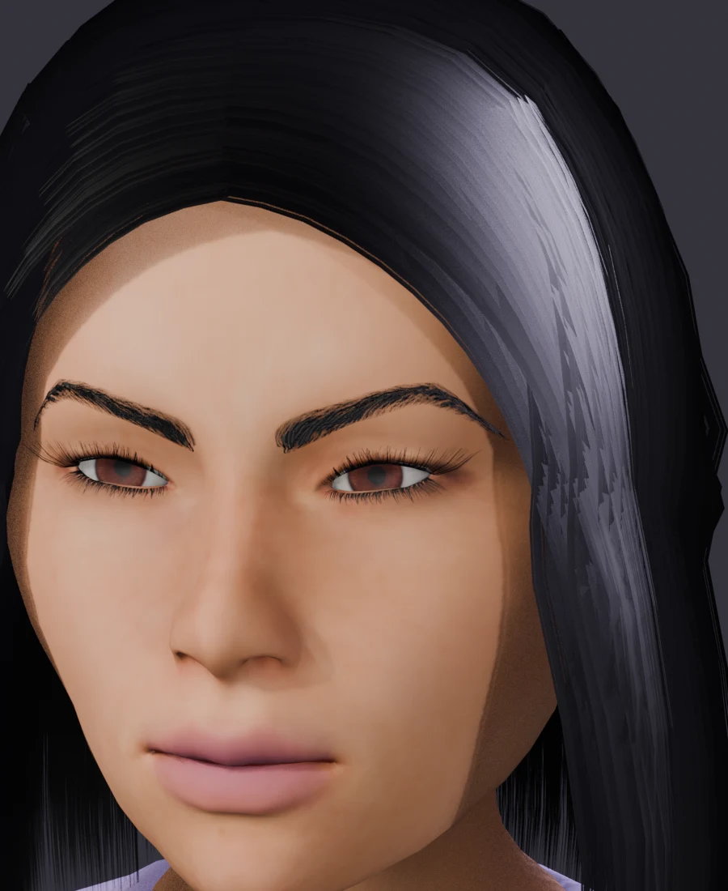
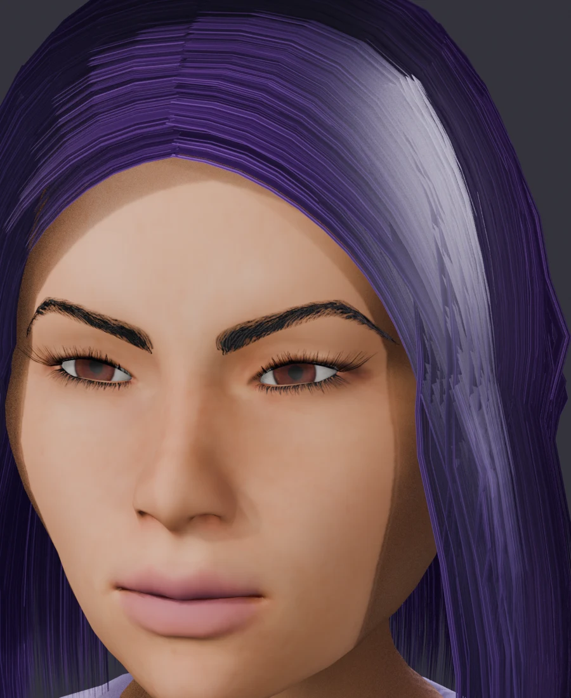
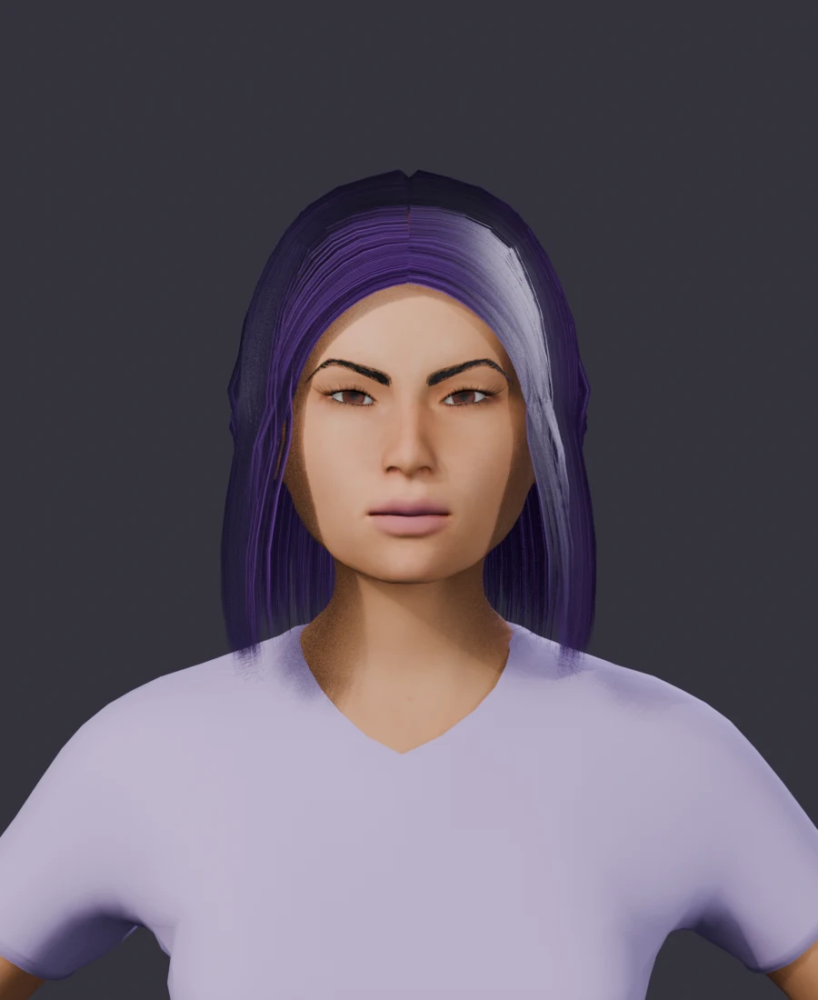

Rodada 5 · proporções medidas nas fotos
Personagem 3D da Evelym
O rosto agora sai das medidas. O MediaPipe (gratuito, roda nesta máquina) marca 478 pontos do rosto em 14 fotos da Evelym, as 8 reais e os 6 retratos estilizados, e um script ajusta a personagem em ciclo (gera, renderiza de frente, mede e corrige) até as proporções baterem. O alvo mistura 60% dos retratos e 40% das fotos reais.
- dentro de 3% das fotos: largura e altura do rosto, mandíbula, largura do olho, largura, comprimento e projeção do nariz e largura da boca;
- ainda um pouco longe: o olho está um pouco mais puxado, a sobrancelha um pouco mais baixa e o lábio de cima um pouco mais grosso que nas fotos;
- as medidas usam a distância entre os olhos como unidade, então valem para qualquer foto, de qualquer tamanho.
Para escolher: cabelo preto, como nas fotos, ou lilás, como nos retratos (combina com o roxo do site).
Ainda falta: moletom lilás com capuz, sorriso e piscada.



